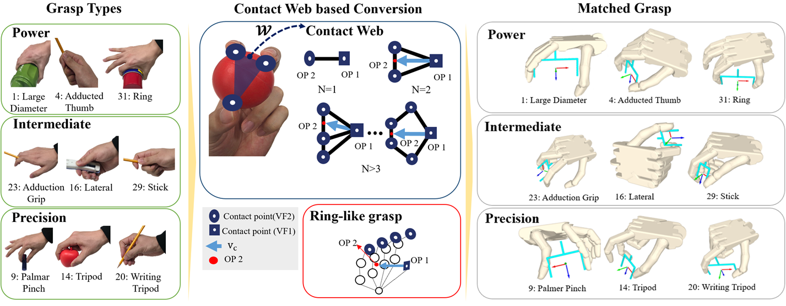
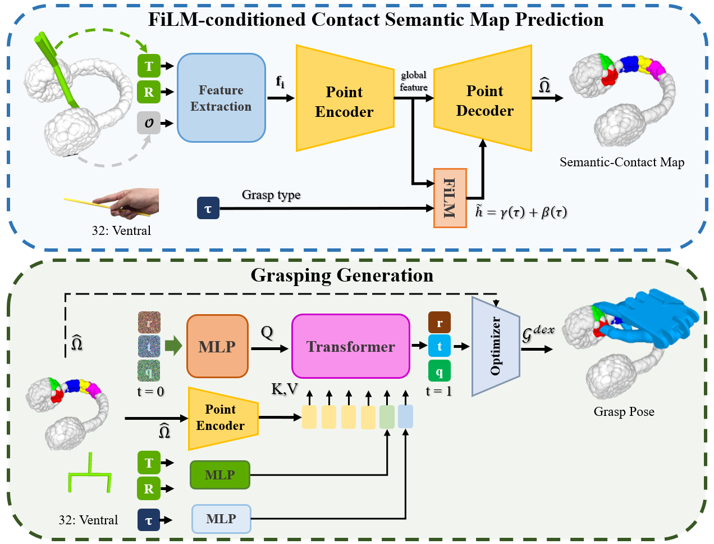
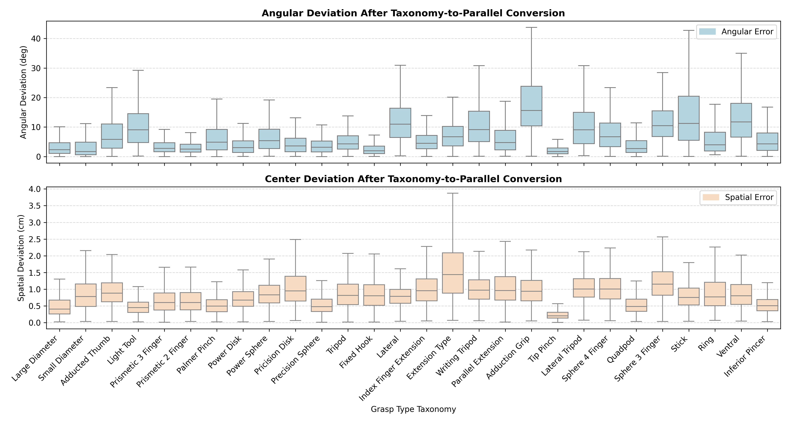

IROS 2026 · Submitted
TL;DR We use a grasp taxonomy as an intermediate representation between task intention and hand–object contact, converting dexterous grasps into a consistent two-point opposition (OP1, OP2) via the Contact Web to extend task-oriented parallel-gripper pipelines to dexterous hands.
Task-oriented grasping requires selecting grasp strategies that match the intended use of an object, but most existing approaches are limited to parallel grippers and do not fully exploit the contact diversity of dexterous hands. In this work, we propose a task-oriented dexterous grasp generation framework that bridges the gap between task intention and executable multi-finger grasps through a grasp taxonomy and contact representation. We first convert the dexterous hand grasp taxonomy into a consistent 2-point opposition representation using the Contact Web, enabling alignment with task-oriented parallel gripper grasp poses. We then predict a taxonomy-conditioned Contact Semantic Map from the object point cloud, grasp pose, and grasp taxonomy, and use it to guide transformer-based dexterous grasp generation. In real-world experiments on unseen household objects, our approach successfully translates diverse grasp taxonomies into stable and task-consistent dexterous executions. These results demonstrate that a grasp taxonomy is an effective intermediate representation for extending existing task-oriented grasping pipelines to dexterous hands.
Add your demo video at static/videos/demo.mp4.
Our goal is to generate a dexterous grasp 𝒢dex that satisfies the task intention, given an object point cloud, a task-oriented parallel-gripper grasp pose, and a grasp taxonomy inferred by an LLM. We address the gap between multi-finger contact and the two-point action space of parallel grippers with a three-stage framework.
Reformulate dexterous contacts as a Contact Web and reduce multi-finger contacts to a consistent (OP1, OP2) opposition aligned with parallel grasps.
Predict a FiLM-conditioned Contact Semantic Map of finger-level contact distributions on the object surface.
A transformer-based generative model synthesizes executable dexterous grasps, refined with test-time adaptation.


We evaluate the framework on five unseen household objects (glue gun, mug, pitcher, knife, spatula) with a UR3 manipulator, an Allegro Hand V5, and an Intel RealSense D435i. We report geometric conversion analysis, an ablation on contact-map prediction, and real-world grasping success.

| Method | mIoU | mPrecision | mRecall | mF1 |
|---|---|---|---|---|
| Full model | 0.462 | 0.482 | 0.916 | 0.631 |
| w/o Distance Feature | 0.435 | 0.495 | 0.788 | 0.605 |
| w/o Alignment Feature | 0.080 | 0.125 | 0.249 | 0.147 |
| w/o Hand-centric Rep. | 0.036 | 0.067 | 0.183 | 0.069 |
Grasp-centric coordinate normalization and direction-aware geometric encoding are critical: removing hand-centric representation collapses mIoU to 0.036.
Top-1 poses reach 59.3% success vs. 48.0% for Top-2; lower-ranked poses increase slip from 20.7% to 28.0%.
Replacing the task-relevant taxonomy with a functionally opposite one drops success from 59.3% to 35.3% at the same grasp pose.
Failures manifest as slippage more than complete failure — contact forms, but stability suffers for elongated / cylindrical objects.
@inproceedings{kim2026taskoriented,
title = {Task-Oriented Dexterous Grasping via Grasp Taxonomy},
author = {Kim, Hyunwoo and Choi, Jeonghwan and Kim, Dohyun and
Hwang, Juntae and Jin, Ilsung and Kim, Donghan},
booktitle = {IEEE/RSJ International Conference on Intelligent Robots
and Systems (IROS)},
year = {2026}
}
This research was supported by the MSIT (Ministry of Science and ICT), Korea, under the Convergence Security Core Talent Training Business Support Program (IITP-2023-RS-2023-00266615) supervised by the IITP; the BK21 FOUR program "AgeTech-Service Convergence Major" through the NRF funded by the Ministry of Education of Korea; the IITP grant funded by MSIT (No. RS-2022-00155911); the Technology Innovation Program funded by MOTIE, Korea; and Smart Farm programs through IPET and KosFarm funded by MAFRA, MSIT, and RDA.